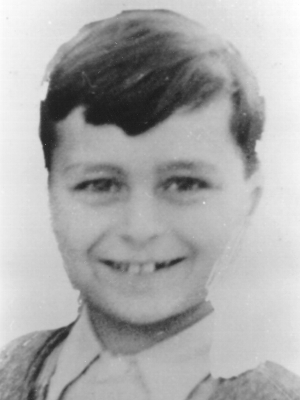

Portrait d’archive
Georges Halpern
Georges HALPERN
Nom : HALPERN
Prénom(s) : Georges
Date naissance : 30/10/1935
Âge (ans) : 8
Lieu naissance : Vienne
Pays ou département : Autriche
Lieu rassemblement : Lyon
Dernière adresse : ?
Ville : Izieu (Ain)
Code postal : 01300
N° Convoi : 71
Date déportation : 13/04/1944
Informations diverses : Julius Halpern, Séraphine Halpern et Georgy sont internés au camp de Rivesaltes. Confié à l’OSE, Georgy est successivement accueilli dans plusieurs de ses maisons. Son nom figure sur la liste de 1940 de la maison d’enfants du château de Chaumont, à Mainsat (Creuse). Il séjourne plus tard, dans le même département, au château du Masgelier, d’où il écrit à sa mère le 31 juillet 1942. Au début d’avril 1943, il quitte la maison de Campestre, à Lodève (Hérault), pour rejoindre Montpellier, d’où il est dirigé en mai 1943 vers la colonie d’Izieu (Ain). Il fait partie des enfants raflés (Source: AJPN).
Halpern (Georges, Adolphe), né le 30 octobre 1935 à Vienne (Isère), décédé le 18 avril 1944 à Auschwitz (Pologne) (JO n°34 du 10/2/1994)
Lieu de déportation : Auschwitz
Lieu de départ : Drancy
Nombre total de déporté·e·s du convoi : 1500
Gazé·e·s à l'arrivée : 1265 (84,3 %)
Survivant·e·s en 1945 : 128 (8,5 %)